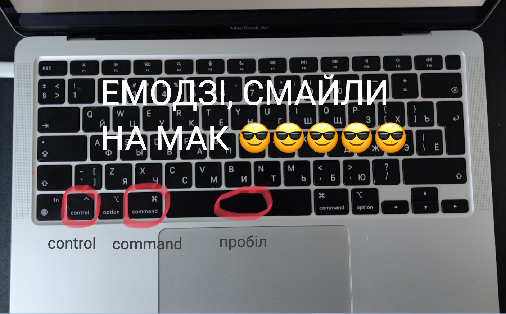
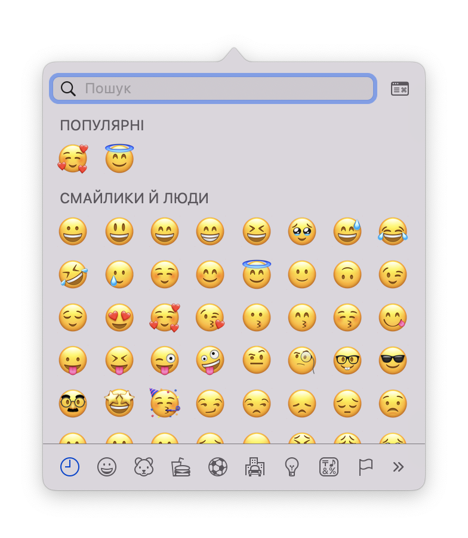

Смайли або емодзі часто використовуються в переписках на айфоні, але при наборі тексту на макбуці теж можна відкрити клавіатуру смайлів, як на телефоні та додати необхідний смайл до вашого повідомлення або тексту.
Як поставити смайл емодзі на мак 😎
Незалежно від мови якою ви друкуєте, щоб відкрити клавіатуру емозді треба використати комбінацію клавіш CONTROL COMMAND ПРОБІЛ, затиснувши три клавіші одночасно.

Після чого на екрані зʼявиться клавіатура емодзі.

Оберіть необхідний смайл і двічі клікніть на нього, він зʼявиться в тексті.
Закрийте меню смайлів.
Про емодзі на мак 😎🥰😇
Емодзі допомагають додати до тексту емоційне забарвлення та зробити комунікацію більш зрозумілою та привабливою для співрозмовника. Зазвичай смайли використовуються, коли в тексті не вистачає інтонації або жестів, які можна бачити під час прямого спілкування. Також вони можуть використовуватися для підсилення жартів, смішних ситуацій або для вираження підтримки та почуттів у співчутливих повідомленнях.
На Mac доступний великий вибір смайлів, які можна використовувати в різних програмах, таких як текстовий редактор, електронна пошта, соціальні мережі та інші.
Перші емодзі з'явилися на Mac в 2008 році в якості додаткового набору символів для японського ринку.
Фігурує інформацію що на макбуці доступно більше 3 000 смайлів різних категорій, таких як обличчя, тварини, їжа, рослини, транспорт, символи та багато іншого. Деякі з них мають різні варіації за кольором та виразом обличчя, що робить весь вибір ще більш різноманітним та багатогранним.
Дізнайтесь розміщення інших символів на клавіатурі макбуку на сторінці: Клавіатура мак.